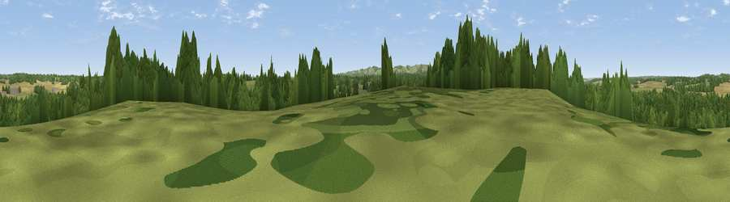

Viewpoint near Hamstead Marshall
#41345 in England · top 89% of its area beats it · near Hamstead MarshallThe view, rendered

A 360° render of this exact spot computed from the terrain model, tree cover and land cover — summer colours, afternoon light, calibrated against photographs of famous viewpoints. Real trees, hedges and buildings will differ in detail.
The panorama
Grey silhouette: terrain skyline in each direction (720 bearings, Earth curvature and refraction included). Dashed green: skyline with trees (+15 m) and buildings (+8 m) as obstacles. Blue strip: how far the ground is visible on each bearing.
Where the view opens
Wedge length = distance to the farthest visible ground on that bearing (vegetation-aware). Rings at 10, 25 and 50 km.
What fills the view
51% woodland · 34% grassland · 15% cropland ·
Angular shares of the visible panorama (visual magnitude), not map area. Landscape diversity 0.45 (0–1 Shannon).
Key numbers
More beautiful places nearby
The staircase of upgrades: each row has a higher view potential than everything closer. Driving times are estimates from straight-line distance, calibrated against real road routing — check an actual route before setting out.
| Place | Direction | Drive | Score |
|---|---|---|---|
| Viewpoint near Hamstead Marshall | E · 1 km | ~3 min | 36.6 |
| Viewpoint near Kintbury | SW · 2 km | ~5 min | 47.1 |
| Gallows Down | SW · 6 km | ~13 min | 75.6 |
| Beacon Hill | SSE · 11 km | ~21 min | 76.7 |
| Martinsell viewpoint | W · 23 km | ~37 min | 77.3 |
| Viewpoint near Buriton | SSE · 56 km | ~78 min | 80.0 |
| Beacon Hill | SE · 63 km | ~86 min | 85.8 |
| Mottistone Down | S · 82 km | ~106 min | 87.2 |
51.40038, -1.42244 · source: screening · position refined by local search. Computed location — check access rights before visiting.